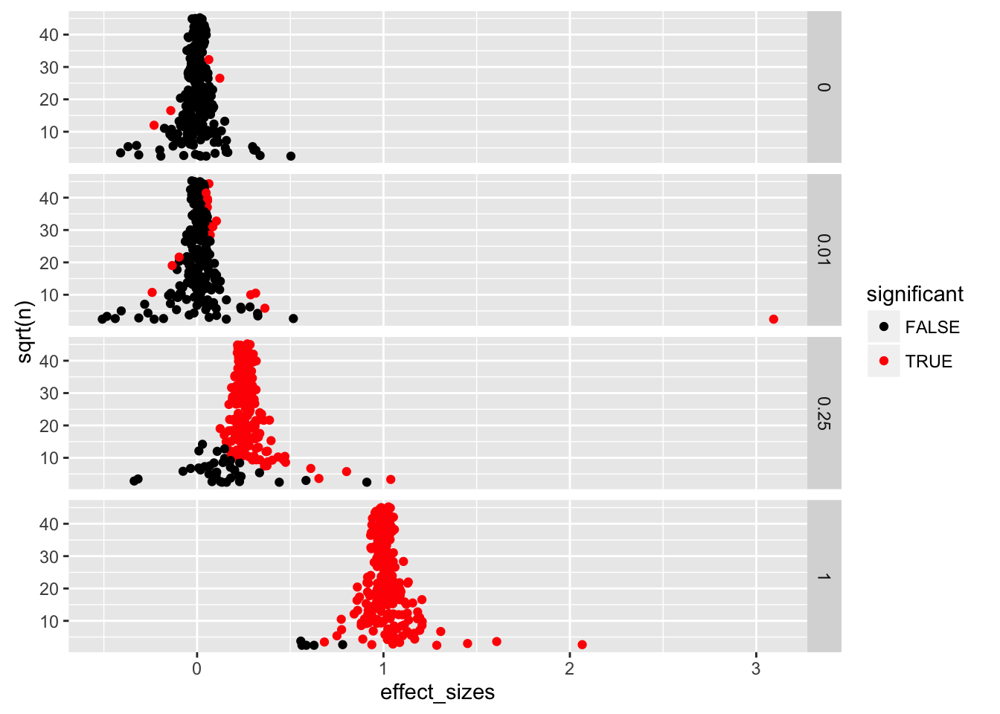
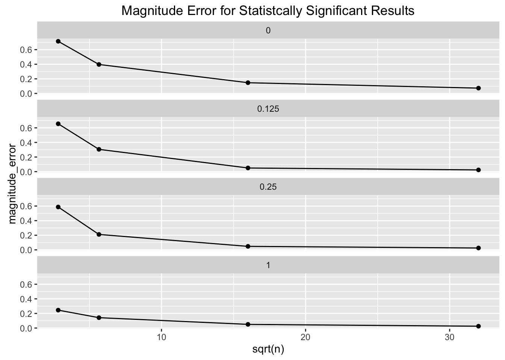
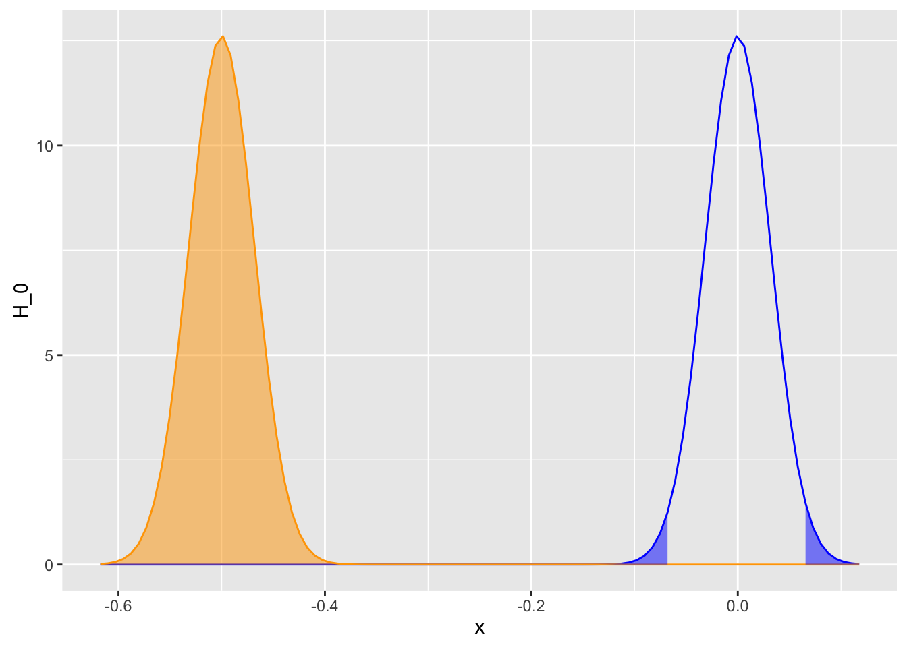

POL S/CS&SS 501, University of Washington, Winter 2016
$$ \DeclareMathOperator{\mean}{mean} \DeclareMathOperator{\var}{var} \DeclareMathOperator{\E}{E} \DeclareMathOperator{\MSE}{MSE} \DeclareMathOperator{\Bias}{Bias} \DeclareMathOperator{\SE}{se} \DeclareMathOperator{\SD}{sd} \DeclareMathOperator{\argmin}{argmin} \DeclareMathOperator{\argmax}{argmax} $$Hypothesis Tests of the Mean
Jeffrey B. Arnold
These are some simulations to illustrate the properties of hypothesis tests of the mean, although the insights translate into hypothesis tests more generally.
(This is still a work in progress)
library("dplyr")
library("ggplot2")
library("tidyr")Significance Tests
null_hypothesis <- 0
mu_values <- c(0, 0.125, 0.25, 1)
sigma <- 1
sample_sizes <- c(8, 32, 256, 1024)
iter <- 4096
results <- vector(mode = "list",
length = length(sample_sizes) *
length(mu_values) * iter)
result_num <- 1
for (i in seq_along(mu_values)) {
mu <- mu_values[i]
for (j in seq_along(sample_sizes)) {
n <- sample_sizes[j]
message("mu:", mu, ", n:", n)
for (k in 1:iter) {
x <- rnorm(n, mean = mu, sd = sigma)
x_mean <- mean(x)
s <- sd(x)
se <- s / sqrt(n)
z <- (x_mean - null_hypothesis) / se
p_value <- 2 * pt(-abs(z), df = n - 1)
results[[result_num]] <-
data_frame(n = n,
mu = mu,
x_mean = x_mean,
s = s,
se = se,
z = z,
p_value = p_value,
same_sign = sign(x_mean) == sign(mu),
effect = x_mean - mu
)
result_num <- result_num + 1
}
}
}
results <- bind_rows(results)Plot of p-values by \(\mu\) and sample size \(n\),
res <- mutate(results,
n = factor(as.character(n),
levels = as.character(sort(unique(n)))),
mu = as.character(mu))
ggplot(res,
aes(x = p_value)) +
geom_histogram(binwidth = 0.05, mapping = aes()) +
facet_grid(n ~ mu, scales = "free_y")
Plot of \(\bar{x}\) colored by statistical significance (\(\alpha = 0.05\)), by population mean \(\mu\) and sample size \(n\),
alpha <- 0.05
ggplot(mutate(res, sig = p_value < alpha),
aes(x = x_mean, fill = sig, color = sig)) +
geom_histogram(binwidth = 0.05) +
geom_rug() +
facet_grid(n ~ mu, scales = "free_y") +
scale_color_manual(values = c("TRUE" = "red", "FALSE" = "black")) +
scale_fill_manual(values = c("TRUE" = "red", "FALSE" = "black")) +
theme_minimal()
Another way to summarize this is to plot a summary of errors as for different values of population mean \(\mu\) and sample size \(n\).
- Type I error, Reject \(H_0\), when \(H_0\) is true, or \(p < \alpha\), when \(\mu = \mu_0\).
- Type II error, Fail to reject \(H_0\), when \(H_a\) is true, or \(p > \alpha\), when \(\mu \neq \mu_0\).
- Wrong sign: (\(sign(\bar{x}) \neq sign(\mu)\))
- Magnitude error (if statistically significant): \(mean(abs(x_mean - \mu))\) when \(p < \alpha\).
alpha <- 0.05
errors <-
results %>%
group_by(mu, n) %>%
mutate(decision_error = ifelse(mu == null_hypothesis,
p_value < alpha, p_value > alpha),
magnitude_error = ifelse(p_value < alpha, abs(x_mean - mu), NA_real_),
sign_error = sign(x_mean) != sign(mu)) %>%
summarize(decision_error = sum(decision_error) / length(decision_error),
magnitude_error = mean(magnitude_error, na.rm = TRUE),
sign_error = sum(sign_error) / length(sign_error)) %>%
ungroup()Probability of Type I or Type II errors for different values of \(\mu\) as \(n\) increases,
ggplot(errors %>% mutate(mu = factor(mu)),
aes(x = sqrt(n), y = decision_error)) +
geom_point() +
geom_line() +
scale_y_continuous(limits = c(0, 1)) +
facet_wrap(~mu, ncol = 1) +
ggtitle("Probability of Type I or Type II error")
Probability of a sign error for different values of \(\mu\) as \(n\) increases,
ggplot(errors %>% mutate(mu = factor(mu)),
aes(x = sqrt(n), y = sign_error)) +
geom_point() +
geom_line() +
scale_y_continuous(limits = c(0, 1)) +
facet_wrap(~mu, ncol = 1) +
ggtitle("Probability of the Wrong Sign")
Size of the magnitude error for different values of \(\mu\) as \(n\) increases,
ggplot(errors %>% mutate(mu = factor(mu)),
aes(x = sqrt(n), y = magnitude_error)) +
geom_point() +
geom_line() +
facet_wrap(~mu, ncol = 1) +
ggtitle("Magnitude Error for Statistcally Significant Results")
Power
sigma <- 1
n <- 1000
mu_0 <- 0
mu_a <- -0.5
alpha <- 0.05
se <- sigma / sqrt(n)
critical_value <- -qnorm(alpha / 2, mean = mu_0, sd = se)
x_min <- min(mu_a, mu_0) - abs(qnorm(0.0001)) * se
x_max <- max(mu_a, mu_0) + abs(qnorm(0.0001)) * se
x <- seq(x_min, x_max, length.out = 100)
curves <- data_frame(x = x,
H_0 = dnorm(x, mean = mu_0, sd = se),
H_a = dnorm(x, mean = mu_a, sd = se))
ggp <-
ggplot() +
geom_line(data = curves, aes(x = x, y = H_0), color = "blue") +
geom_line(data = curves, aes(x = x, y = H_a), color = "orange")
if (-critical_value > x_min) {
ggp <- ggp +
geom_ribbon(data = filter(curves, x > critical_value),
mapping = aes(x = x, ymax = H_0, ymin = 0), fill = "blue", alpha = 0.5)
}
if (critical_value < x_max) {
ggp <- ggp +
geom_ribbon(data = filter(curves, x < -critical_value),
mapping = aes(x = x, ymax = H_0, ymin = 0), fill = "blue", alpha = 0.5)
}
if (mu_0 < mu_a) {
ggp <- ggp +
geom_ribbon(data = filter(curves, x > critical_value),
mapping = aes(x = x, ymax = H_a, ymin = 0),
fill = "orange", alpha = 0.5)
} else {
ggp <- ggp +
geom_ribbon(data = filter(curves, x < -critical_value),
mapping = aes(x = x, ymax = H_a, ymin = 0),
fill = "orange", alpha = 0.5)
}
ggp
Calculate power through simulation.
mu_0 <- 0
mu <- 0.5
sigma <- 1
n <- 5
alpha <- 0.05
iter <- 1000
results <- rep(NA, iter)
for (i in seq_len(iter)) {
x <- rnorm(n, mean = mu, sd = sigma)
p <- 2 * pt(-abs((mean(x) - mu_0) / (sd(x) / sqrt(n))), df = n - 1)
results[i] <- p
}
reject_pct <- sum(results < 0.05) / iter * 100
if (mu == mu_0) {
message("Type I Errors: ", round(reject_pct, 2), "%")
} else {
message("Power: ", round(reject_pct, 2), "%")
}## Power: 14.2%Some notes on Type I and Type II errors:
- For a given test, there is is trade-off of Type I and Type II error. The fewer false positives, the more false negatives. E.g. in trial a judge could minimize any innocent defendants being declared guilty by ruling not guilty on all trials. However, then all guilty defendants would be declared not guilty.
- Tests generally focus on Type I error, and then for a given Type I error, more powerful tests are preferred. One reason to focus on Type I error, is that Type II error requires specifying a value of the alternative hypothesis, but there is often not just one value.
- Type I error is independent of sample size
- Type II decreases with sample size
- Questions?
- For a fixed sample mean and standard deviation: How would the significance change with the sample size?
- For a fixed sample mean and sample size: How would the significance change with the sample standard deviation?
Ways that the estimate can break
- finite population
correlated errors
- serial correlation
- cluster correlation
skewed distribution

This work is licensed under a Creative Commons Attribution-NonCommercial-ShareAlike 4.0 International License. R code is licensed under a BSD 2-clause license.